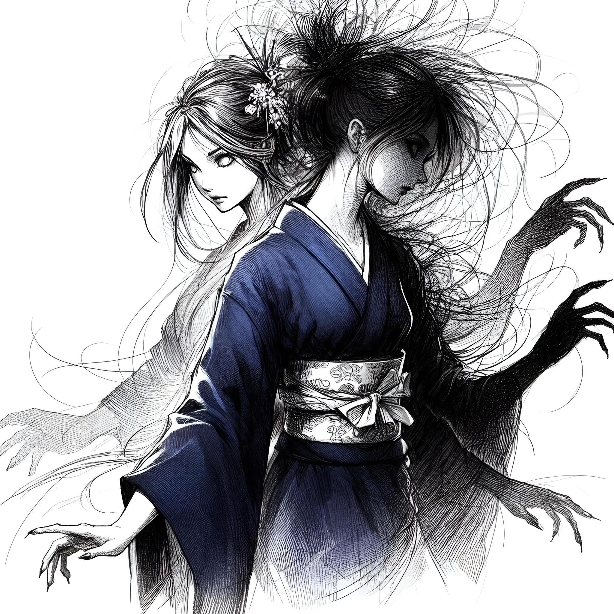

Les Chroniques Sombres de Komayō
Entre ombre et lumière se tissent Les Chroniques Sombres de Komayō, une série de récits envoûtants qui plongent dans les profondeurs de l'âme humaine. Ces histoires, aussi captivantes que troublantes, dévoilent les rencontres fatidiques entre des mortels ordinaires et Komayō, une entité surnaturelle dont la beauté n'a d'égale que sa dangereuse séduction.

Une Collection Ensorcelante
Cette collection fascinante explore différentes facettes de la légende de Komayō à travers des récits distincts :
- Rencontre au Bar de la Régence - Un homme cherchant à échapper à sa solitude accepte une partie d'échecs qui changera son destin à jamais.
- L'orgueil ou l'âme du Champion - L'histoire d'un champion d'échecs dont l'arrogance le conduit à une confrontation fatale.
- L'Amour sous les cerisiers - Un récit poignant où la quête de l'amour parfait mène aux frontières du surnaturel.
- Le Souffle du Renard - Une épouse délaissée trouve dans le jeu de ōgi une échappatoire qui pourrait bien être son dernier refuge.
- La Genèse de l'Enchanteresse - Les origines mystérieuses de Komayō enfin révélées, dans un conte aussi fascinant que terrifiant.
Mêlant habilement éléments de folklore japonais et tension psychologique, ces chroniques servent de mise en garde contre l'attrait de l'inconnu et la poursuite imprudente du plaisir. À travers chaque récit résonne un avertissement qui traverse les âges, nous rappelant la fine ligne qui sépare le désir de la destruction.